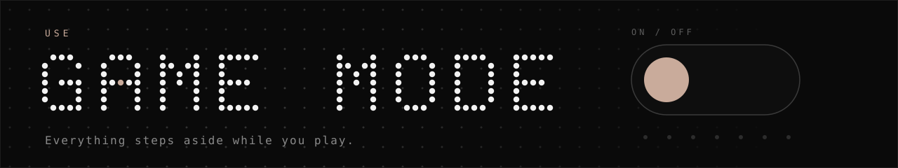

Game mode
Hotkeys and mouse tricks are great until a game fights over them. Game mode switches them all off while a game runs, and back on after.
What it turns off
- The scroll hotkeys (the AutoHotkey script).
- komorebi and whkd (stopped, which gives windows back).
- The YASB bar.
- AltSnap, if you have it.
- The taskbar is set to auto-hide.
Afterwards only what it switched off itself is switched back on, in the right order, so a taskbar you already had on auto-hide stays that way.
Two ways it starts
Automatic: fullscreen
The scroll script asks Windows every couple of seconds whether a fullscreen app is in front (this also catches borderless games). Two checks in a row switch game mode on. It then stays on until the game's own process has closed, so alt-tabbing out of a game does not bring everything back. Browsers and media players are ignored.
Exact: Playnite
If you start your games from Playnite, use its global scripts. In Playnite's settings, under Scripting:
| Field | Script |
|---|---|
| Before starting a game | & powershell.exe -NoProfile -WindowStyle Hidden -File "$env:USERPROFILE\.config\komorebi\game-mode.ps1" on |
| After exiting a game | & powershell.exe -NoProfile -WindowStyle Hidden -File "$env:USERPROFILE\.config\komorebi\game-mode.ps1" off |
game-mode.ps1 only leaves "on" or "off" in a small file; the script picks it up within two seconds.
By hand
The scroll script's tray icon has Game mode now and Game mode (automatic). What it did is written to %APPDATA%\game-mode.log.